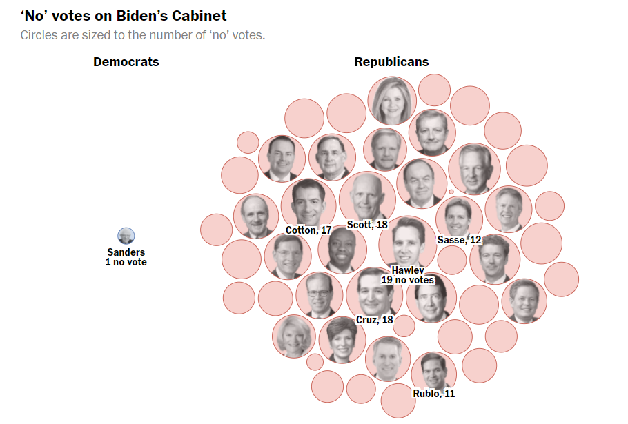

Ejercicio 1. Análisis de visualizaciones de datos
En este primer ejercicio se hará un análisis desde el punto de vista más estético.
Visualización1
Este es un ejemplo de infografía clásica, realizada en La Vanguardia. Destaca por la importancia que le da al aspecto visual, dado a que está enfocada a la divulgación científica y no al periodismo de datos. El tema es el viaje espacial a Marte de la nave Perseverance. Esta infografía fue ganadora de un tercer premio NH al periodismo gráfico. Desde mi punto de vista, es un contenido que llama la atención del lector, incitándole a que lo lea en profundidad. Sin embargo, está totalmente pensada para la edición en papel, ya que a la hora de verlo online no se aprecian todos los detalles, y el texto se ve pequeño. Esto impide que el usuario pueda disfrutarlo a través del dispositivo. La gama cromática es totalmente un acierto. Los tonos marrones y grises hacen referencia a la composición seca y terrosa de este planeta. En el imaginario colectivo de nuestra sociedad, debido a películas de ciencia ficción, coincide con la representación gráfica que hace esta infografía del planeta Marte. En cuanto a la composición de la infografía, se puede decir que es muy ordenada. A pesar de contener muchos datos, cada espacio está perfectamente diferenciado del anterior, evitando que el lector pueda caer en confusión. También incluye un pequeño texto, que dota la parte gráfica de contexto y amplía brevemente la información ya dada.
Visualización2
La segunda visualización elegida, es una infografía del Washington Post. En eta ocasión sí se trata de una infografía de datos puramente. Recoge con exactitud qué senadores han estado votando en contra de las propuestas de Biden. Lo hace de una forma muy inteligente, pero sobre todo, muy clara. Consigue el objetivo: que el lector entienda a simple vista el grueso del mensaje sin necesidad de leer el artículo. Que de una pasada, se sepa de qué trata el artículo. Esto lo consigue gracias a una composición a base de esferas. Cada una de ellas representa a un senador, e incluyen la foto del mnismo. Cuanto mayor es el tamaño de las esferas, más votos negativos representan. Sin embargo, este tipo de gráfico no es nada nuevo, puesto que el New York Times ya lo utilizó en las elecciones USA 2021. La elección de colores es perfecta, ya que utiliza los colores asociados con el partido del que habla. De esta forma, la asociación para el lector es muy rápida, facilitando la lectura y evitando las posibles confusiones. Otro aspecto destacable de esta visualización de datos, es que además del gráfico general, que plantea una visión global del gobierno de Biden, si seguimos leyendo, encontramos dichos datos mucho más detallados. Siguiendo la misma estética, profundiza más en los datos. Puntualiza la fecha, qué senadores votaron en contra, y hacia quién fueron dichos votos. Así, es el lector quién decide si seguir ahondando en el tema, o quedarse con el principio del artículo, un poco más "superficial". Si hubiera que poner algún punto negativo, podríamos decir que las fotos de los senadores se ven un poco mal debido a las propias características de la web. Es un espacio muy pequeño para un a foto con mucho detalle.